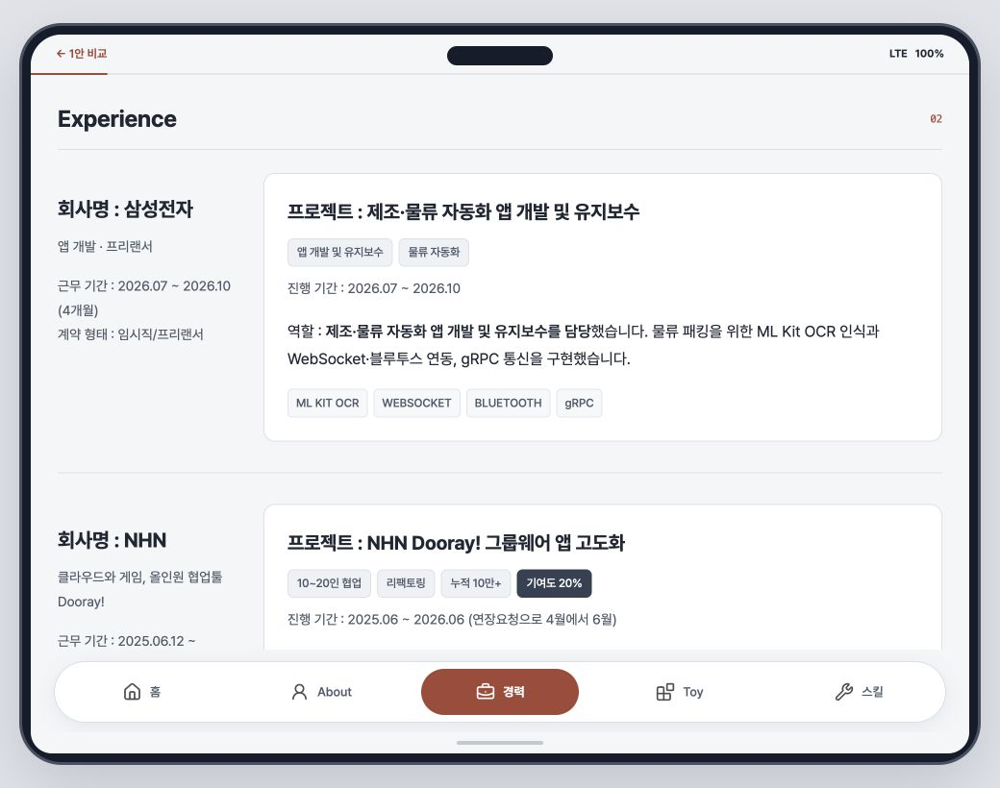
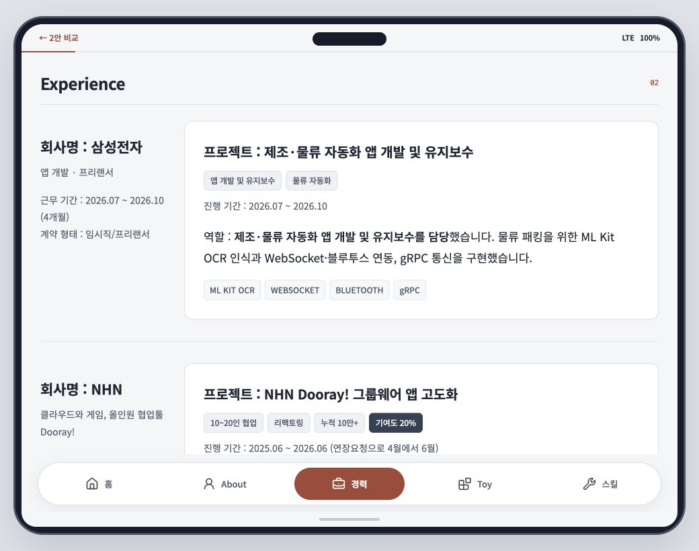

01 / 선명형 · 추천
Pretendard, 더 또렷하게
익숙한 인상과 간결함을 유지하면서 읽기 크기와 굵기를 정리했습니다.
- 본문
- 16px / 줄 간격 1.8
- 보조 정보
- 14px, 대비 강화
- 제목
- 20px / 굵기 700

같은 내용, 두 가지 읽기 방식
휴대폰 프레임·붉은 포인트·프로필 사진은 그대로.
작은 보조 글자와 좁은 자간을 개선하고, 긴 경력 본문으로 비교합니다.
익숙한 인상과 간결함을 유지하면서 읽기 크기와 굵기를 정리했습니다.

한글의 단정한 형태와 큰 본문에 집중했습니다. 화면은 조금 길어지지만 문장이 편안하게 이어집니다.
